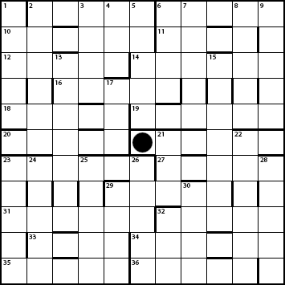

ACROSS
2. Rates laboratory setting for metric measurement (5)
6. Origin of black hole, cold and barren (5)
10. Little coin with the queen in the middle (6)
11. Loosen, stop mucking about (4)
12. Tedium, meaning every second is recorded, we heard (5)
14. Hour lost by gun club in restaurant (6)
16. Evenly turn ahead to doff (5)
18. Born about one, Switzerland's a specific area in which to live (5)
19. As held tight, held tight, bound with ropes (6)
20. Live, but without power, mix TV images (5)
21. Leather girl has a sample of designer drug (5)
23. Tool for making level, always about nice exterior (6)
27. Osment film, see dead one disappearing that's pitched in (5)
29. Type of beer, large, frothy (5)
31. Hacks and editors partially smoothed things out in a way (6)
32. Eats the wrong way, swallowing second helping of brains, eyeball (5)
33. Horizontally positioned one in local network (4)
34. Orangutan, perhaps cross, eats just the outside tips (6)
35. Lady, heartless, anticipating tranquility interrupted, harps (5)
36. Earn roughly about 1000 dollars, or something within fixed limits (5)
DOWN
1. Indian, for instance, is one of eleven? (5)
2. Pinch basket going up, you aim a ball at it in a game (6)
3. Knock out with an unbeatable hand, on the upswing (4)
4. A garland of flowers for multiple Idol participants (3)
5. Having to do with pieces of land, are half unbounded (5)
6. Place wager about a defeat (4)
7. Halts, turns and strips (5)
8. A bird's nest, there's one above that big lake (5)
9. Organ, over 500 but under 1000, is scratched, like a car (5)
13. In a cell, unseen, lil' alleles may be mixed with _____! (7)
15. Head rep working to secure source of asthma medicine (7)
17. Well, honey? (3)
21. Hot air lifts flag (3)
22. Law for state and people (6)
23. Classic car, not entirely unmatched seller (5)
24. Believe a lynx has it in its clutches, like a calf (5)
25. Blue stamp at base of letter (5)
26. It put RAF mostly ahead of Germany and Austria, right?! (5)
28. Force to remove University's style of clothing (5)
29. What leads light to various cardinal points! (4)
30. Old-fashioned giant in leathern seconds (4)
32. Spring out of despair (3)